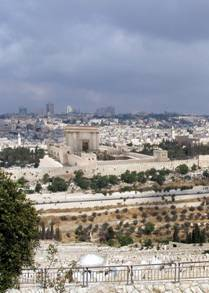

Preterisme
Door:Franklin ter Horst (Aangemaakt: 16 januari
2019) (Laatste bewerking: 4 december 2019)
Het preterisme is
afkomstig van de Jezuïet
Luis de Alcasar. Hij schreef een boek genaamd de verborgen betekenis van de
Apocalyps die in 1614 gepubliceerd werd. Het is een visie die inhoudt dat
praktisch alle Bijbelse profetieën al tijdens de verwoesting van Jeruzalem en
de Tempel in het jaar
Matthéüs 16:27-28 “Want de Zoon des mensen zal komen in de heerlijkheid zijns
Vaders, met zijn engelen, en dan zal Hij een ieder vergelden naar zijn daden. Voorwaar, Ik zeg u: Er zijn sommigen onder degenen, die
hier staan, die de dood voorzeker niet zullen smaken, voordat zij de Zoon
des mensen hebben zien komen in zijn Koninklijke waardigheid.”
Men is van mening dat deze tekst duidelijk maakt dat de terugkomst van Jezus/Yeshua binnen een generatie zou plaatsvinden. Wanneer dit wordt gezien in het licht van Zijn opstanding of zijn hemelvaart, klopt dat wel. Maar hier wordt geenszins een tijdsperiode van ca. veertig jaar (een generatie) mee aangeduid. De apostel Petrus wees erop dat een dag bij de Heer is als duizend jaar en duizend jaar als een dag:
2 Petrus 3:8-9-10-11
“Doch dit ene
mag u niet ontgaan, geliefden, dat één dag bij de Here is als duizend jaar en
duizend jaar als één dag. De Here talmt niet met de belofte, al zijn er, die
aan talmen denken, maar Hij is lankmoedig jegens u, daar Hij niet wil, dat
sommigen verloren gaan, doch dat allen tot bekering komen. Maar de dag des Heren zal komen als een
dief. Op die dag zullen de hemelen met gedruis voorbijgaan en de elementen door
vuur vergaan, en de aarde en de werken daarop zullen gevonden worden. Daar al
deze dingen aldus vergaan, hoedanig behoort gij dan te zijn in heilige wandel
en godsvrucht…”
Gods tijdrekening is anders dan die van ons. Gezien de talrijke profetieën over de eindtijd, heeft de zichtbare terugkomst van Jezus/Yeshua, beslist nog niet plaatsgevonden. Ook Zijn terugkomst zal in het perspectief van Gods tijdrekening gezien moeten worden. Wanneer wij de uitspraken van de Bijbelse profeten volgen komen er tal van zaken aan de orde die duidelijk slaan op een verre toekomst en niet op zaken die al in het verleden hebben plaatsgevonden. Er staan tal van zaken in de Bijbel die niet vervult zijn, maar duidelijk nog in vervulling moeten gaan.
De Bijbel verbindt de wederkomst van Jezus/Yeshua aan een hele reeks gebeurtenissen, die rond 70 n.Chr. beslist niet hebben plaatsgevonden. Matthéüs 24:30 zegt nadrukkelijk dat direct na die verdrukking Jezus/Yeshua zal terugkomen op de wolken van de hemel, met grote macht en heerlijkheid. Elk oog zal Hem zien en Zijn komst zal zijn als de bliksem:
Matthéüs 24:27 “Want
gelijk de bliksem komt van het oosten en licht tot het westen, zo zal de komst
van de Zoon des mensen zijn.”
Dat is echt nog niet gebeurd. Na Zijn terugkomst zullen de goddeloze vijanden worden geoordeeld en de duivel voor duizend jaar worden opgesloten. Openbaring 13 maakt duidelijk dat het beest (antichrist) zeven jaar lang zal heersen en zijn helper de valse profeet de hele wereld zal aansporen om het beest als een god te aanbidden. De laatste jaarweek onder leiding van de nep-messias moet duidelijk nog beginnen. Dat Nero de antichrist zou zijn geweest is niets anders dan een idiote dwaling. De antichrist zal de laatste grote leider van de eindtijd zijn en de grote tegenstander van Jezus/Yeshua. Terwijl Israël en de gemeente uitkijken naar de komst van de echte Messias, zal hij doen alsof hij de messias is en de herbouwde Tempel in Jeruzalem in bezit nemen.
De voorbereidingen voor de herbouw van de tempel zijn in volle gang. Dat er in de eindtijd daadwerkelijk weer een functionerende stenen Tempel in Jeruzalem zal staan blijkt duidelijk uit de opdracht die Johannes in het visioen over de twee getuigen heeft gekregen. Deze zullen zich pas manifesteren in de eindfase van het huidige wereldbestel. Er bestaan geen Bijbelse aanwijzingen dat deze twee getuigen al in het begin van de huidige jaartelling op aarde zijn verschenen.
In hoofdstuk 19 wordt de climax beschreven: de letterlijke wederkomst van Jezus/Yeshua. De antichrist en de valse profeet worden in de vuurpoel geworpen en satan in de put des afgronds de Abyssos. Letterlijk betekent dit een “bodemloze put”. Hier worden de demonen gevangen gehouden, die bij de vijfde bazuin als een demonisch leger over de wereld worden losgelaten. Zij hebben als koning de engel des afgronds: zijn naam is in het Hebreeuws Abaddon en in het Grieks Apollyon (verderver). Dit is de plaats waar satan gedurende het Duizendjarig Vrederijk gebonden zal zijn zodat hij niet in staat zal zijn om mensen te verleiden. Hij wordt echter nog niet ten volle geoordeeld want aan het einde van de duizend jaar wordt hij vrijgelaten:
Openbaring 20:7 “En wanneer de duizend jaren voleindigd zijn, zal de satan uit zijn gevangenis worden losgelaten, en hij zal uitgaan om de volkeren aan de vier hoeken der aarde te verleiden.”
De veroordeelde satan moet als een misdadiger
openbaar gemaakt worden. Zijn bevrijding uit het “huis van bewaring”dienst
slechts zijn laatste openbaring. Hierna zal ook hij in de
vuurpoel geworpen worden.
Door satans verleidingen duizend jaar uit te schakelen, maakt God
de wereld klaar voor het Duizendjarige Vrederijk.
Jesaja 9:6 “Groot
zal de heerschappij zijn en eindeloos de vrede op de troon van David en over
zijn koninkrijk, doordat hij het sticht en grondvest met recht en
gerechtigheid, van nu aan tot in eeuwigheid. De ijver van de Here der
heerscharen zal dit doen.”
Volgens Jesaja
zal de wolf bij het schaap verkeren en de panter zich neerleggen bij het bokje;
het kalf, de jonge leeuw en het mestvee zullen samen zijn, en een kleine jongen
zal ze hoeden; de koe en de berin zullen samen weiden, haar jongen zullen zich
samen neerleggen, en de leeuw zal stro eten als een rund; dan zal een zuigeling
bij het hol van een adder spelen en naar het nest van een giftige slang zal een
gespeend kind zijn hand uistrekken. Men zal geen kwaad doen noch verderf
stichten op gans mijn heilige berg, want de aarde zal vol zijn van kennis des
Heren, zoals de wateren de bodem der zee bedekken. Jesaja11:6 t/m10. Nee, zeggen de preteristen, de profetieën van Jesaja moeten
symbolisch worden gezien. Wat ze doen is alles vergeestelijken wat op de
toekomst betrekking heeft. De terugkeer van Jezus/Yeshua is toekomst en is
beslist niet in het
Zacharia 14:4 “…zijn
voeten zullen te dien dage staan op de Olijfberg, die vóór Jeruzalem ligt aan
de oostzijde; dan zal de Olijfberg middendoor splijten, oostwaarts en
westwaarts, tot een zeer groot dal, en de ene helft van de berg zal noordwaarts
wijken en de andere helft zuidwaarts…
Dit is
duidelijk een profetie voor de toekomst wanneer Zijn koningschap op de aarde
zal beginnen en alle volken zullen optrekken naar Jeruzalem.
Maar volgens de visie van de preteristen is Gods koninkrijk nu al nadrukkelijk aanwezig op aarde. Hoe bezijden de werkelijkheid dat is mag blijken uit het feit dat Satans invloed in onze tijd alsmaar groter wordt. Ook de opstanding van de doden zou al hebben plaatsgevonden. De rechtvaardige zielen zouden een geestelijk lichaam hebben gekregen dat geschikt is voor de hemel en de onrechtvaardige zielen zouden in de poel van vuur zijn geworpen. Er zou dus geen sprake zijn van een lichamelijke opstanding.
Ook de visie van de preteristen over het boek Openbaring is niets anders dan
een idiote dwaling omdat de boodschap van Bijbel totaal anders is. Er is sprake
van een selectieve ontkenning van dit boek. Zo ziet men de hoofdstukken 6 en
Een bekende hedendaagse vertegenwoordiger van het preterisme is de Anglicaanse nieuwtestamenticus Tom Wright. Hij blies het preterisme nieuw leven via publicaties die ten dele ook in het Nederlands verschenen. In het Nederlandse taalgebied wordt de preteristische leer verkondigd door onder meer Anne Salomons en David Sörensen. Sörensen noemt zichzelf apostel, profeet en verkondiger van Gods woord. Ja, voor minder doet hij het niet! Deze figuur gaat niet alleen mee in de dwaling dat de wederkomst van Jezus/Yeshua in het jaar 70 heeft plaatsgevonden, maar doet daarnaast schokkende antisemitische uitspraken over Joden en Israël. Op zijn website www.ontdekgod.nl publiceerde hij een ruim zevenduizend woorden lang essay over Israël en Joden waarmee hij duidelijk maakt een onvervalste aanhanger van de vervangingstheologie te zijn.
Anne Salomons is bekend als auteur op de site zoekdewaarheid.nl. Ook deze figuur geeft een eigen draai aan Gods Woord en geeft daarmee de indruk dat God eigenlijk niet zo Almachtig is als gedacht. De manier waarop Salomons Bijbelteksten naar eigen idee uitlegt komt er op neer dat God kennelijk niet meer in staat zou zijn om Zijn Woord te vervullen! Ook pleegt Salomons, net als Sörensen een frontale aanval op de staat Israël en laat daarmee eveneens zien een onvervalste aanhanger van de vervangingstheologie te zijn. De Bijbel is echter niet onduidelijk over het herstel van de staat Israël want zie wat Jezus/Yeshua in Lukas zegt over het herstel van de vijgeboom Israël:
Lukas 29-30 “Let op de
vijgeboom en op alle bomen. Zodra zij uitlopen, weet gij uit uzelf, omdat gij
het ziet, dat de zomer nabij is. Zo moet ook gij, wanneer gij dit ziet
geschieden weten, dat het Koninkrijk Gods nabij is.”
De vijgeboom is het herstelde Israël en alle andere bomen zijn Israëls buurlanden die zich eveneens hebben hersteld. Het genoemde Koninkrijk vindt plaats na terugkeer van Jezus/Yeshua.Israël is na de verwoesting van Jeruzalem in het jaar 70, tijdelijk terzijde gezet, tot dat het plan met de heidenen voltooid is.
Handelingen
28:26-27-28 “Met het gehoor zult gij horen en gij zult
het geenszins verstaan, en ziende zult gij zien en gij zult het geenszins
opmerken; want het hart van dit volk is vet geworden, en hun oren zijn
hardhorend geworden, en hun ogen hebben zij toegesloten, opdat zij niet zien
met hun ogen en met hun oren niet horen en met hun hart niet verstaan en zij zich
bekeren, en
Ik hen zou genezen. Het zij u dan bekend, dat dit heil Gods aan de heidenen gezonden is;
die zullen dan ook horen!”
Het gaat om een tijdelijke verharding. Klik hier voor mijn artikel over het herstel van Israël
Sörensen gaat zelfs zover te beweren dat het Joodse volk niet eens meer bestaat. Er zouden alleen nog mensen zijn die zich ‘als Jood beschouwen’ en komt daarbij aanzetten met de Khazaren-mythe, waarbij hij schrijft dat de huidige Joden die in Israël wonen eigenlijk Turken zijn. Hij gaat hiermee brutaalweg op de stoel van God zitten om te bepalen wie er wel en wie er niet tot de echte nazaten van Juda behoort. Niemand kent het antwoord, alleen God Zelf kent degene die tot Zijn uitverkoren volk horen. Sörensen meent kennelijk het ware licht ontvangen te hebben maar hij mist ieder zicht op wat God met het huidige Israël aan het doen is door honderden profetieën te vergeestelijken, verbasteren of gewoon te negeren. Juist waar gelovigen onvoldoende kennis van de Bijbel bezitten vallen ze voor dergelijke dwaalleringen.
Via zijn bediening Real Life heeft Sörensen een internationaal, wijd vertakte, bediening. Het is een bediening waarin genezing en bevrijding, het bidden tot de Heilige Geest, profetische boodschappen, Words of Faith en het bidden in tongen een belangrijke plaats innemen. Ook worden er door hem ‘profetische’ boodschappen en dromen uitgelegd en besproken. Zo schreef hij op 30 oktober 2011 dat God het volgende tegen hem zou hebben gezegd:
“Laat daarom los, al die boeken en al die
papieren. Laat daarom los, al die moeilijke leringen over Mij, over hoogtes en
laagtes, over dieptes en over de wijdte… Het maakt me aan het lachen. Mensen
toch! Waar zijn jullie toch mee bezig? Laat je toch dronken maken door Mij! Ik
wil lachen met je! Ik wil spelen met je! ”
Aloude theologische dwalingen worden door dit soort figuren in een nieuw jasje de Gemeente binnengebracht en de gelovigen zodoende op een dwaalspoor gezet.
Terug naar: Inhoud